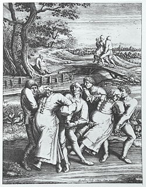

Dancing plague of 1518
The Dancing Plague of 1518, or Dance Epidemic of 1518, was a case of dancing mania that occurred in Strasbourg, Alsace (modern-day France), in the Holy Roman Empire from July 1518 to September 1518. Somewhere between 50 and 400 people took to dancing for weeks. There are many theories behind the phenomenon, the most popular being stress-induced mass hysteria, suggested by John Waller.[1][2] Other theories include ergot and religious explanations. There is controversy concerning the number of deaths.[3]

Modern Theories
Food poisoning
Some believe[5] the dancing could have been brought on by food poisoning caused by the toxic and psychoactive chemical products of ergot fungi (ergotism), which grows commonly on grains (such as rye) used for baking bread. Ergotamine is the main psychoactive product of ergot fungi; it is structurally related to the drug lysergic acid diethylamide (LSD-25) and is the substance from which LSD-25 was originally synthesized. The same fungus has also been implicated in other major historical anomalies, including the Salem witch trials.[11][12]